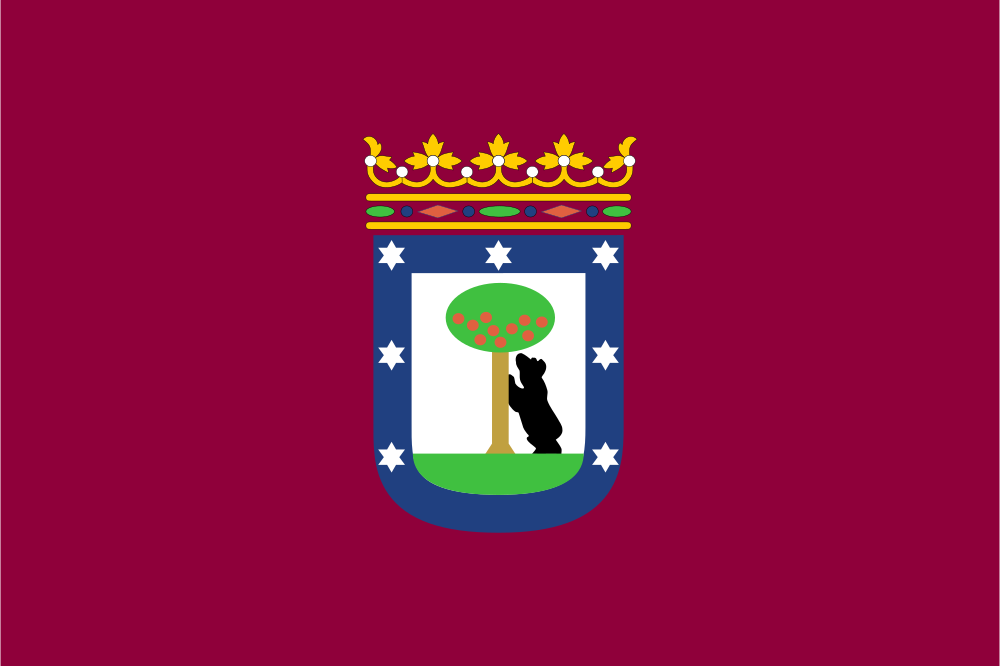
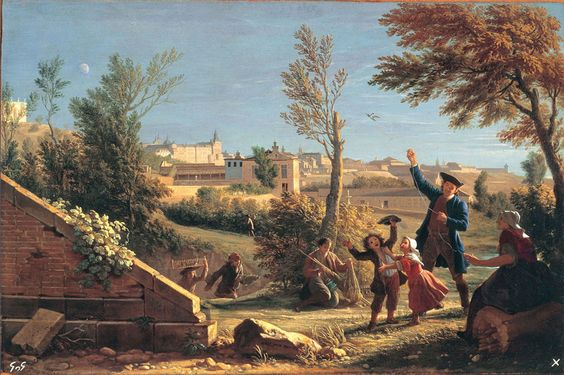
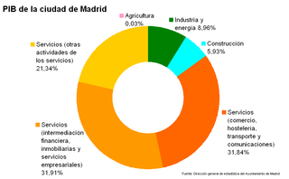

Introducción
| Pais | España |
|---|---|
| Comunidad Autonoma | Comunidad de Madrid |
| Provincia | Madrid |
| Partido Judicial | Madrid |
Madrid es un municipio y ciudad de España. Es la capital del Estado y de la Comunidad de Madrid. La ciudad, que tiene categoría histórica de villa, es también conocida como la Villa y Corte. Dentro del término municipal de Madrid, el más poblado de España, viven 3 182 981 personas empadronadas, según el INE de 2017. El área metropolitana de Madrid tiene una población de 6 543 031 habitantes, por lo que es la tercera o cuarta área metropolitana de la Unión Europea, según la fuente, por detrás de las de París y Londres, y en algunas fuentes detrás también de la Región del Ruhr, así como la tercera ciudad más poblada de la Unión Europea, por detrás de Berlín y Londres.
Geografía

La ciudad de Madrid se encuentra en la zona central de la península ibérica, a pocos kilómetros al norte del cerro de los Ángeles, centro geográfico de la Península. Las coordenadas de la ciudad son 40°26′N 3°41′O. El centro de población de Madrid está situado a 657 metros sobre el nivel del mar, siendo así una de las capitales más altas de Europa. La altitud máxima del municipio es de 846 metros aproximadamente, la cual se da al noroeste del Pardo, cerca de Torrelodones, y su altitud mínima de unos 543 metros se da en el sur, a orillas del río Manzanares. El contexto geográfico y climático de Madrid es el de la Submeseta Sur, dentro de la Meseta Central. La ciudad está situada a pocos kilómetros de la sierra de Guadarrama e hidrográficamente se encuentra emplazada en la cuenca del Tajo.
Historia
Los orígenes de la ciudad son objeto de revisión tras los recientes hallazgos, en su perímetro más antiguo, de enterramientos visigodos así como de restos que se remontan a los carpetanos o periodo prerromano. Las excavaciones arqueológicas en el término municipal también arrojan restos romanos en diferentes distritos de la ciudad moderna, atribuyéndose al Madrid romano, y sobre la base de los restos encontrados durante las obras de soterramiento de la autopista M-30, una localización a orillas del río Manzanares en el área de influencia del puente de Segovia, en el entorno hoy ocupado por el parque de Atenas, la parte baja de la calle de Segovia y el paseo de la Virgen del Puerto. El Madrid romano no se situaría por tanto en el posterior enclave en altura del periodo visigodo para situarse en el valle del Manzanares, a escasos metros de donde se documentan los referidos restos visigodos, en la colina formada por los actuales Palacio Real y catedral de la Almudena. Estos recientes hallazgos de época visigoda han venido a confirmar las teorías de varios autores que sostuvieron que el posterior asentamiento fortificado musulmán de Maǧrīţ (del siglo IX) se había fundado sobre un vicus visigodo del siglo VII llamado Matrice o matriz, arroyo. No sería hasta el siglo XI que Madrid es incorporado a la Corona de Castilla, tras su reconquista por los hispanos cristianos, procedentes de Segovia y comandados por Día Sanz, siendo rey Alfonso VI de León, en 1083. A partir de ese momento es cuando Madrid comienza un proceso lento pero constante de crecimiento en su territorio, población e influencia, que abarca todo el periodo medieval hasta situarse a fines del siglo XV como una de las principales ciudades de Castilla. Resultado de este proceso de crecimiento, entre otras razones, sería su designación como sede de la Corte por Felipe II en 1561, convirtiéndose en la primera capital permanente de la monarquía española. Desde ese mismo año de 1561, Madrid experimentó un crecimiento exponencial en tamaño y población, que alcanzaría a finales del siglo XIX más de medio millón de habitantes sobre el suelo de la ciudad consolidada (ciudad antigua más ensanche). Madrid, por tanto, ha sido desde el Renacimiento (siglo XVI) y hasta la actualidad, capital de España y sede del Gobierno y la administración del Estado, salvo un breve intervalo de tiempo entre los años de 1601 y 1606, en los que la capitalidad pasó a Valladolid así como durante la Guerra Civil, cuando el Gobierno de la República se trasladó primero a Valencia y después a Barcelona, y al finalizar la guerra es Burgos la ciudad que ostenta la capitalidad
Economía
La ciudad de Madrid tenía en 2003 un producto interior bruto (PIB) de 79 785 millones de euros, lo que suponía el 10 % de la renta nacional. De los sectores económicos de la ciudad, el más importante es el terciario o sector servicios, que representa ya un 85,09 % de la economía de la ciudad. Dentro de este sector destacan los servicios financieros (31,91 % del PIB total) y las actividades comerciales (31,84 % del PIB total). El resto del PIB lo aporta la industria (8,96 % del PIB total), el sector de la construcción (5,93 % del PIB total). La agricultura tiene un carácter residual, de manera que apenas aporta un 0,03 % del total. Es el mayor centro empresarial de España: en 2008, el 72 % de las 2000 mayores empresas de España tenían su sede central en Madrid. Y actualmente, el 50,1 % de los ingresos de las 5000 principales empresas españolas son generados por sociedades con sede social en Madrid, las cuales representan el 31,8 % de ellas. Madrid fue calificada en un informe de Mastercard de 2008 como el 5° mayor centro de comercio de Europa (tras Londres, París, Fráncfort y Ámsterdam) y el 11° a nivel mundial